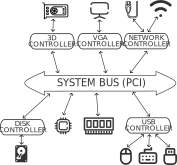

Ogni pc ha una diversa configurazione delle periferiche, l’immagine è solamente un esempio semplificato di una configurazione.
lspci$ lspci
00:00.0 Host bridge: Intel Corporation Coffee Lake HOST and DRAM Controller (rev 0b)
00:02.0 VGA compatible controller: Intel Corporation WhiskeyLake-U GT2 [UHD Graphics 620]
00:04.0 Signal processing controller: Intel Corporation Xeon E3-1200 v5/E3-1500 v5/6th Gen Core Processor Thermal Subsystem (rev 0b)
00:08.0 System peripheral: Intel Corporation Xeon E3-1200 v5/v6 / E3-1500 v5 / 6th/7th/8th Gen Core Processor Gaussian Mixture Model
00:12.0 Signal processing controller: Intel Corporation Cannon Point-LP Thermal Controller (rev 30)
00:14.0 USB controller: Intel Corporation Cannon Point-LP USB 3.1 xHCI Controller (rev 30)
00:14.2 RAM memory: Intel Corporation Cannon Point-LP Shared SRAM (rev 30)
00:14.3 Network controller: Intel Corporation Cannon Point-LP CNVi [Wireless-AC] (rev 30)
00:15.0 Serial bus controller: Intel Corporation Cannon Point-LP Serial IO I2C Controller #0 (rev 30)
00:15.1 Serial bus controller: Intel Corporation Cannon Point-LP Serial IO I2C Controller #1 (rev 30)
00:16.0 Communication controller: Intel Corporation Cannon Point-LP MEI Controller #1 (rev 30)
00:1c.0 PCI bridge: Intel Corporation Cannon Point-LP PCI Express Root Port #1 (rev f0)
00:1c.4 PCI bridge: Intel Corporation Cannon Point-LP PCI Express Root Port #5 (rev f0)
00:1d.0 PCI bridge: Intel Corporation Cannon Point-LP PCI Express Root Port #9 (rev f0)
00:1d.4 PCI bridge: Intel Corporation Cannon Point-LP PCI Express Root Port #13 (rev f0)
00:1e.0 Communication controller: Intel Corporation Cannon Point-LP Serial IO UART Controller #2 (rev 30)
00:1e.2 Serial bus controller: Intel Corporation Cannon Point-LP Serial IO SPI Controller (rev 30)
00:1f.0 ISA bridge: Intel Corporation Cannon Point-LP LPC Controller (rev 30)
00:1f.3 Audio device: Intel Corporation Cannon Point-LP High Definition Audio Controller (rev 30)
00:1f.4 SMBus: Intel Corporation Cannon Point-LP SMBus Controller (rev 30)
00:1f.5 Serial bus controller: Intel Corporation Cannon Point-LP SPI Controller (rev 30)
02:00.0 3D controller: NVIDIA Corporation GP108M [GeForce MX150] (rev a1)
04:00.0 Non-Volatile memory controller: Sandisk Corp WD Blue SN500 / PC SN520 x2 M.2 2280 NVMe SSD (rev 01)
lspci -tvCon l’aggiunta dei flag -t (visione ad albero) e -v (mostra tutte le informazioni) è possibile avere una visione gerarchica dei dispositivi connessi al bus PCI
Perchè significa che tali dispositivi non sono direttamente connessi al bus, ma passano per un controller. Ad esempio, tutti i miei dispositivi USB sono connessi al controller USB, che a sua volta è connesso al bus pci, il quale infatti è presente nella lista sopra.
lsusb$ lsusb
Bus 001 Device 001: ID 1d6b:0002 Linux Foundation 2.0 root hub
Bus 001 Device 002: ID 13d3:56cb IMC Networks USB2.0 HD IR UVC WebCam
Bus 001 Device 003: ID 8087:0aaa Intel Corp. Bluetooth 9460/9560 Jefferson Peak (JfP)
Bus 001 Device 013: ID ffff:5678 USB Disk 2.0
Bus 002 Device 001: ID 1d6b:0003 Linux Foundation 3.0 root hub
Bus 002 Device 003: ID 152d:0578 JMicron Technology Corp. / JMicron USA Technology Corp. JMS578 SATA 6Gb/s
lsusb -tv/: Bus 001.Port 001: Dev 001, Class=root_hub, Driver=xhci_hcd/12p, 480M
ID 1d6b:0002 Linux Foundation 2.0 root hub
|__ Port 002: Dev 036, If 0, Class=Mass Storage, Driver=usb-storage, 480M
ID ffff:5678 USB Disk 2.0
|__ Port 005: Dev 002, If 0, Class=Video, Driver=uvcvideo, 480M
ID 13d3:56cb IMC Networks
|__ Port 005: Dev 002, If 1, Class=Video, Driver=uvcvideo, 480M
ID 13d3:56cb IMC Networks
|__ Port 005: Dev 002, If 2, Class=Video, Driver=uvcvideo, 480M
ID 13d3:56cb IMC Networks
|__ Port 005: Dev 002, If 3, Class=Video, Driver=uvcvideo, 480M
ID 13d3:56cb IMC Networks
|__ Port 010: Dev 003, If 0, Class=Wireless, Driver=btusb, 12M
ID 8087:0aaa Intel Corp. Bluetooth 9460/9560 Jefferson Peak (JfP)
|__ Port 010: Dev 003, If 1, Class=Wireless, Driver=btusb, 12M
ID 8087:0aaa Intel Corp. Bluetooth 9460/9560 Jefferson Peak (JfP)
/: Bus 002.Port 001: Dev 001, Class=root_hub, Driver=xhci_hcd/6p, 10000M
ID 1d6b:0003 Linux Foundation 3.0 root hub
|__ Port 001: Dev 005, If 0, Class=Mass Storage, Driver=uas, 5000M
ID 152d:0578 JMicron Technology Corp. / JMicron USA Technology Corp. JMS578 SATA 6Gb/s
I driver sono moduli software di basso livello che consentono al sistema operativo di pilotare un dispositivo hardware. Un insieme di driver standard sono già previsti all’interno del sistema operativo, per dispositivi particolari potrebbe essere necessario installare driver aggiuntivi.
Il sistema operativo espone poi delle interfacce standard per interagire con i dispositivi in modo trasparente per l’applicazione utente.
La filosofia “everything is a file” si applica anche per le periferiche connesse alla macchina, infatti esistono dei file speciali nella cartella /dev che sono la rappresentazione nel file system dei dispositivi.
Essendo dei file, il loro contenuto può essere analizzato come se fossero come tutti gli altri (utilizzando comandi come cat, ls, …),
però essi rappresentano delle interfacce di basso livello che le applicazioni utente possono utilizzare per interagire con i dispositivi con operazioni di I/O.
All’interno della cartella /dev risiedono due categorie di file:
$ ls -alh /dev
total 4,0K
drwxr-xr-x 21 root root 4,3K 5 set 12.54 .
drwxr-xr-x 18 root root 4,0K 4 set 15.30 ..
[...]
drwxr-xr-x 3 root root 60 21 ago 09.36 bus
drwxr-xr-x 2 root root 4,8K 5 set 17.26 char
[...]
drwxr-xr-x 4 root root 400 5 set 17.26 input
[...]
crw-rw-rw- 1 root root 1, 3 2 set 14.47 null
crw------- 1 root root 241, 0 2 set 14.47 nvme0
brw-rw---- 1 root disk 259, 0 2 set 14.47 nvme0n1
brw-rw---- 1 root disk 259, 1 2 set 14.47 nvme0n1p1
brw-rw---- 1 root disk 259, 2 2 set 14.47 nvme0n1p2
brw-rw---- 1 root disk 259, 3 2 set 14.47 nvme0n1p3
[...]
crw-rw-rw- 1 root root 1, 8 2 set 14.47 random
[...]
brw-rw---- 1 root disk 8, 0 2 set 14.47 sda
brw-rw---- 1 root disk 8, 1 2 set 14.47 sda1
brw-rw---- 1 root disk 8, 2 2 set 14.47 sda2
[...]
Per comprendere meglio che cos’è un device che comunica tramite un character special file, consideriamo il mouse.
Tutti i file all’interno della directory /dev/input consentono la comunicazione con le periferiche di input del nostro sistema (ad esempio: tastiera, mouse, webcam, …).
All’interno della directory /dev/input/by-path è possibile esplorare i dispositivi in maniera “user-friendly”.
Domanda: Cosa succede eseguendo il comando cat /dev/input/mice?
Sto visualizzando i byte che il mio mouse invia al sistema operativo ad ogni movimento!
Associati al file con prefisso sd (SCSI Disk) storicamente si potevano individuare tutti i dispositivi che utilizzavano SCSI (stampanti, scanner, hard disk, …), oggi il protocollo è in disuso, ma i sistemi Linux continuano a indirizzare hark disk (SCSI, IDE e SATA) e chiavette USB a questo percorso.
/dev/sda rappresenta il primo hard disk, /dev/sbd il secondo, e così via.In caso il dispositivo presenti delle partizioni, esse sono rappresentate con un numero posto accanto al nome del dispositivo.
/dev/sda1 è la prima partizione, /dev/sda2 la seconda, e così via.Viene associato a tutti i dispositivi che utilizzano NVM Express (NVMe) come tecnologia per accedere al dispositivo di memoria non-volatile. Viene comunemente utilizzato per i dischi a stato solido (SSD).
All’interno della cartella /dev è possibile distinguere:
/dev/nvme0 che rappresenta il controller del primo disco. Esso regola la scrittura sul disco, consentendo l’esistenza dei namespace./dev/nvme0n1 rappresenta il namespace 1 all’interno del primo disco NVMe./dev/nvme0n1p[1-15] rappresenta la partizione [1-15] all’interno del namespace 1 del primo disco NMVe.I namespace di un disco NMVe sono una suddivisione logica dei dati, gestita direttamente dal controller del disco stesso. Ogni namespace consente di essere trattato come un “disco” separato, consentendo un accesso concorrente rispetto gli altri namespace. I namespace vengono impiegati in computer con esigenze particolari, comunemente nei pc desktop si utilizza il namespace di default, ovvero il numero 1. Più dettagli riguardo ai namespace sono riportati sul sito di NVMe: https://nvmexpress.org/resource/nvme-namespaces/.
Una partizione del disco definisce delle aree separate di memoria che possono essere gestite separatamente dal sistema operativo, ad ognuna di essere può essere associato un tipo di file system differente.
Sono dispositivi che non possiedono un componente fisico collegato al pc, ma offrono funzionalità implementate direttamente a livello di sistema operativo. Alcuni esempi:
/dev/random: Produce uno stream infinito di bytes con valori pseudo-casuali. Vengono utilizzati per scopi crittografici.Un computer è una macchina che segue delle regole per svolgere le sue funzioni, di conseguenza, anche se in grado di produrre numeri che all’apparenza sembrano casuali, essi non sono totalmente impredicibili come eventi naturali (ad esempio, il rumore atmosferico), per questo motivo vengono definiti come pseudo-casuali.
/dev/null: Accetta qualsiasi tipo di input e lo scarta, senza produrre nessun output. L’utilizzo più comune per questo comando è quello di ignorare degli stream in uscita prodotti da processi.
Un esempio:$ cat /dev/random > /dev/null
/dev/zero: Accetta qualsiasi tipo di input e lo scarta, producendo come output uno stream continuo di NULL (0 bytes). Utile per creare nuovi file contenenti unicamente dei byte a zero, con il fine di pre-allocare lo spazio sul disco./dev/diskConsente di esplorare tutte le unità di memoria connesse al computer in modalità “user-friendly”
/dev/busContiene tutti i controller (character devices) che gestiscono i dispositivi USB connessi al pc.
Diversi strumenti aiutano sia l’esplorazione che l’utilizzo di dispositivi di memoria esterni:
lsblk: Informazioni sui dispositivi a blocchi connessi al pc.fdisk: Utility di sistema per gestire le partizioni dei dischi.mount: Utility per montare un file system ad un percorso.lsblkConsente di consultare i dispositivi a blocchi presenti sul pc (fatta eccezione per la RAM), e informazioni importanti come il punto di mount, utilizzato per accedervi.
$ lsblk
NAME MAJ:MIN RM SIZE RO TYPE MOUNTPOINTS
sda 8:0 1 29,3G 0 disk
nvme0n1 259:0 0 476,9G 0 disk
├─nvme0n1p1 259:1 0 300M 0 part /boot/efi
├─nvme0n1p2 259:2 0 459,7G 0 part /
└─nvme0n1p3 259:3 0 17G 0 part [SWAP]
Come mostra l’output del comando lsblk il disco in utilizzo sul pc presenta 3 partizioni, ciascuna delle quali ha un punto di mount.
Un punto di mount è una directory del file system che è logicamente connessa ad un altro file system, in questo esempio proveniente dal disco primario.
fdiskUtility di sistema per gestire le partizioni di un disco, in questo ambito utile per investigare a quale file di sistema è stato associato il dispositivo USB connesso.
$ fdisk -l
Disk /dev/nvme0n1: 476,94 GiB, 512110190592 bytes, 1000215216 sectors
Disk model: WDC PC SN520 SDAPNUW-512G-1002
Units: sectors of 1 * 512 = 512 bytes
Sector size (logical/physical): 512 bytes / 512 bytes
I/O size (minimum/optimal): 512 bytes / 512 bytes
Disklabel type: gpt
Disk identifier: BCA6CA00-08B6-6245-83F8-FC173D095FFA
Device Start End Sectors Size Type
/dev/nvme0n1p1 4096 618495 614400 300M EFI System
/dev/nvme0n1p2 618496 964576913 963958418 459,7G Linux filesystem
/dev/nvme0n1p3 964576914 1000206899 35629986 17G Linux swap
Disk /dev/sda: 29,3 GiB, 31457280000 bytes, 61440000 sectors
Disk model: ProductCode
Units: sectors of 1 * 512 = 512 bytes
Sector size (logical/physical): 512 bytes / 512 bytes
I/O size (minimum/optimal): 512 bytes / 512 bytes
Altri utilizzi dell’utility fdisk non sono coperti da questo corso, ma possono essere approfonditi dal manuale utente: https://man7.org/linux/man-pages/man8/fdisk.8.html
mountConsente di montare un file system esterno su una cartella desiderata all’interno di un percorso del pc
Il file system esterno può provenire da un dispositivo rimovibile o da un percorso di rete, in questa lezione copriamo il primo caso.
Con il comando fdisk -l sono a conoscenza di qual è il percorso che mi consente di accedere al mio dispositivo USB (in questo caso /dev/sda),
mentre il comando lsblk mostra che il device /dev/sda al momento non possiede un mount point per accedervi.
Il processo è semplice:
$ mkdir $HOME/usb
$ mount /dev/sda $HOME/usb
$ ls -alh $HOME/usb
...
umount$ umount /dev/sda
$ ls -alh $HOME/usb
Ogni programma eseguito in un sistema linux ha il suo processo.
I processi hanno una struttura gerarchica, la radice comune a tutti è il processo init responsabile dell’esecuzione di tutti i software all’interno del sistema.
Ogni processo:
echo $$.Lo stato di un processo può essere:
kill o killall e non sta eseguendo nessuna operazione, ma la sua esecuzione può essere riesumata.L’exit-code è un valore numerico (0-255) restituito al processo padre nel momento in cui un processo termina. La convenzione per gli exit-code è:
0 significa che il processo è terminato correttamente1-255 il processo è terminato con un errore. Idealmente ogni valore identifica un errore differente, ma il significato che ad essi è associato può variare.Un processo in esecuzione può essere di tre tipi:
psIl comando ps (Process Status) permette di ottenere informazioni sui processi attivi.
Di default, ps mostra i processi attivi dell’utente corrente.
ps senza opzioni mostra i processi dell’utente corrente associati al terminale su cui ps viene lanciato.
ps a mostra i processi di tutti gli utenti.
ps u mostra le informazioni in formato user-oriented.
ps x mostra informazioni sui processi che non hanno un terminale di controllo (background, demoni, servizi)
Le tre opzioni vengono tipicamente combinate: ps aux
È possibile eseguire un processo in background post-ponendo & al comando su terminale. Ad esempio:
$ sh -c 'sleep 5 && echo Terminato!' &
[1] 131593
$ jobs
[1] + 131593 running sh -c 'sleep 5 && echo Terminato!'
$ Terminato!
[1] + 131593 done sh -c 'sleep 5 && echo Terminato!'
Questo comando esegue uno script shell che attende 5 secondi poi scrive sullo standard output “Terminato!”.
Se non lo eseguissi in background (rimuovendo &) dovrei attendere 5 secondi prima di poter interagire nuovamente con il terminale da cui l’ho lanciato, perchè di default è un processo in foreground.
Per gestire i processi in background figli del processo corrente posso eseguire:
jobs consente di visualizzare l’elenco dei sotto-processi in backgroundfg comando che consente di spostare l’esecuzione in foreground di un processo in background. Se non viene specificato l’id, viene prelevato l’ultimo che è stato posto in background.top / htop)top Consente di avere una visione real-time dei processi in esecuzione, insieme ad una preziosa panoramica delle risorse utilizzate rispetto alle totali.
$ top
top - 15:33:59 up 4:42, 2 users, load average: 2,70, 6,53, 4,70
Tasks: 339 total, 1 running, 338 sleeping, 0 stopped, 0 zombie
%Cpu(s): 3,4 us, 1,5 sy, 0,0 ni, 94,4 id, 0,1 wa, 0,5 hi, 0,2 si, 0,0 st
MiB Mem : 15808,3 total, 847,4 free, 10927,9 used, 5369,8 buff/cache
MiB Swap: 17397,4 total, 17341,2 free, 56,2 used. 4880,4 avail Mem
PID USER PR NI VIRT RES SHR S %CPU %MEM TIME+ COMMAND
137878 anitvam 20 0 1239992 231768 211956 S 6,6 1,4 0:00.83 konsole
847 root 20 0 1182360 207444 141000 S 5,0 1,3 12:04.65 Xorg
1728 anitvam 20 0 2534772 279132 130920 S 4,7 1,7 10:47.28 kwin_x11
2716 anitvam 20 0 33,2g 658404 324392 S 4,3 4,1 19:14.92 chrome
2763 anitvam 20 0 32,4g 165380 110848 S 3,0 1,0 4:21.39 chrome
77629 anitvam 20 0 1156,0g 401540 139904 S 2,0 2,5 4:31.55 chrome
679 root 20 0 22992 16612 6500 S 1,7 0,1 1:08.24 python3
1769 anitvam 20 0 3644448 417728 166268 S 1,3 2,6 5:16.92 plasmashell
4771 101 20 0 1555036 155724 46304 S 1,0 1,0 1:37.89 mongod
435 root -51 0 0 0 0 S 0,7 0,0 0:16.40 irq/109-ELAN1401:00
1878 anitvam 20 0 246104 35724 30604 S 0,7 0,2 1:15.28 ksystemstats
78013 anitvam 20 0 1155,9g 173896 110072 S 0,7 1,1 0:27.40 chrome
138113 anitvam 20 0 1131,9g 369660 93528 S 0,7 2,3 0:22.63 code
140042 anitvam 20 0 11072 8060 5884 R 0,7 0,0 0:00.07 top
171 root 0 -20 0 0 0 I 0,3 0,0 0:01.47 kworker/2:1H-events_highpri
678 root 20 0 413844 25020 20668 S 0,3 0,2 0:16.80 NetworkManager
1725 anitvam 20 0 772716 64736 53452 S 0,3 0,4 0:04.25 ksmserver
1963 anitvam 20 0 5887584 285932 41824 S 0,3 1,8 1:16.35 jetbrains-toolb
77659 anitvam 20 0 1219,6g 319376 111132 S 0,3 2,0 4:21.60 chrome
...
top è un comando interattivo, che aggiorna le informazioni ogni intervallo di tempo prestabilito.
Una volta individuato un processo critico che sta utilizzando un numero inaspettatamente superiore delle risorse previste, è possibile mandargli il segnale di terminazione direttamente mentre top è in esecuzione, premendo il tasto k sulla tastiera.
Una volta premuto k posso indicare a direttamente l’id e il segnale da mandare al processo.
Esiste anche una versione più semplice da navigare con anche una presentazione a colori, chiamata htop.
UNIX consente ai processi di inviare segnali ad altri processi.
I segnali sono numerici, e ciascuno ha un significato specifico.
Quelli più rilevanti per noi sono:
SIGINT (2) – segnale che viene inviato alla pressione di CtrlC, che chiede al processo di terminare ordinatamente (simile a SIGTERM)SIGTERM (15) – segnale di terminazione, che chiede al processo di terminare ordinatamenteSIGKILL (9) – segnale di terminazione forzata, che termina il processo immediatamenteSIGSTOP (19) – segnale di pausa del processo, che lo sospende senza terminarloSIGCONT (18) – segnale di continuazione del processo, che lo fa ripredere se attualmente sospesokillA dispetto del nome, il comando kill non “uccide” i processi, ma permette di inviare loro segnali.
Sintassi: kill [opzioni] PID.
Se nessuna opzione viene specificata, al processo target viene inviato un segnale SIGTERM.
Può essere inviato un segnale diverso sostituendo SIG con -, per esempio: kill -KILL 6754 manda un SIGKILL al processo con PID 6754.
Con l’opzione -s, è possibile inviare un segnale in base al suo numero.
Il comando precedente è equivalente a kill -s 9 6754
killallIl comando killall è simile a kill, ma invece di prendere un PID,
prende un nome di processo e invia il segnale a tutti i processi che corrispondono a quel nome
La prima riga di output del comando top riporta delle informazioni importanti per un amministratore di sistema,
infatti, esse mostrano da quanto tempo il computer è in esecuzione, quanti utenti sono attivi in un determinato momento e qual è il load average del sistema.
$ top
top - 15:33:59 up 4:42, 2 users, load average: 2,70, 6,53, 4,70
Il load average non è altro che la media del numero di processi in attesa di essere eseguiti dal processore.
La metrica mostra tre valori in quanto rappresentano la media per gli ultimi 1, 5 e 15 minuti d’esecuzione.
Si può ottenere la stessa informazione eseguendo il comando uptime
$ uptime
16:06:02 up 5:14, 2 users, load average: 1,02, 1,19, 1,77
I processi in esecuzione, scrivono importanti informazioni sull’andamento della loro esecuzione in file di log.
I file di log sono fondamentali per gestire un processo fallito in modo inaspettato e identificare una soluzione.
I file di log sono memorizzati nella cartella /var/log e possono essere di due formati: log di sistema (in binario) e log di testo normale.
Gran parte delle applicazioni memorizzano utilizzando il servizio di log di sistema, per interagire con essi è necessario passare dall’utility di journalctl.
journalctljournalctl -bFiltra i log a partire dal riavvio più recente. Altrimenti l’output parte dai log più vecchi memorizzati.
È possibile specificare di quanti riavvii il journal deve filtrare gli output con degli indici negativi;
se 0 indica il riavvio corrente, -1 indica quello precedente e così via.
journalctl -p errFiltra i log per livello di gravità “err”.
journalctl -kFiltra i log relativi al kernel.
journalctl --since yesterdayFiltra i log a partire dal giorno precedente.
journalctl --since "2024-01-09" --until "2024-09-09"Filtra i log appartenenti ad un intervallo di tempo prestabilito, specificato con lo standard ISO 8601 (YYYY-MM-DD).
journalctl -fMostra i log correnti e mostra i log in tempo reale nel terminale.
Potenzialmente sì.
Per questo motivo, a intervalli di tempo stabiliti, i file di log vengono ruotati, ovvero:
Grazie alla rotazione dei log è quindi possibile ottimizzare lo spazio occupato da essi, seppur mantenendo la possibilità di analizzarli in futuro.
logrotate è il comando che si occupa della rotazione dei file di log, configurato con il file di sistema /etc/logrotate.conf.
$ cat /etc/logrotate.conf
# see "man logrotate" for details
# rotate log files weekly
weekly
# keep 4 weeks worth of backlogs
rotate 4
# restrict maximum size of log files
#size 20M
# create new (empty) log files after rotating old ones
create
# uncomment this if you want your log files compressed
#compress
# Logs are moved into directory for rotation
# olddir /var/log/archive
# Ignore pacman saved files
tabooext + .pacorig .pacnew .pacsave
# Arch packages drop log rotation information into this directory
include /etc/logrotate.d
/var/log/wtmp {
monthly
create 0664 root utmp
minsize 1M
rotate 1
}
/var/log/btmp {
missingok
monthly
create 0600 root utmp
rotate 1
}
Internet è una rete che interconnette dispositivi provenienti da tutto il mondo.
Ci sono 5,16 miliardi utenti di Internet, il 64,4% della popolazione mondiale è ora online.
Fonte
Tutti i dispositivi connessi ad internet sono chiamati host (o end system). Host perchè essi “ospitano” le applicazioni che utilizzano internet, end system perchè risiedono “ai bordi” rispetto alla vasta infrastruttura Internet. Sono host:
Gli host sono suddivisi in due categorie:
Gli host sono connessi tra loro grazie a:
Esistono due principali tipi di commutatori di pacchetti:
Fonte: Computer Networking: A top-down approach - Kurose, Ross
È possibile distinguere due tipologie di rete:
Gli ISPs sono aziende che possiedono parte della complessa infrastruttura di rete, essi consentono agli utenti finali di stipulare contratti per accedere a Internet.
Esistono tre tipologie di ISP:
Compresa la complessa architettura della rete internet, si comprende quanto sia necessario che il transito delle informazioni al suo interno debba essere regolato. A questo scopo servono i protocolli di rete.
Un protocollo definisce il formato e l’ordine dei messaggi scambiati tra due o più entità comunicanti, come anche le azioni che bisogna intraprendere nel momento in cui si invia e/o riceve un messaggio.
Computer Networking: A top-down approach - Kurose, Ross
I protocolli di rete sono organizzati a livelli (layers).
Ogni protocollo appartiene ad uno specifico livello, che può essere implementato via hardware, via software o una combinazione dei precedenti.
Internet si compone di uno stack di 5 livelli di protocolli, dall’alto:
Il ruolo del livello fisico è di far transitare le informazioni bit per bit sui canali che portano il messaggio a destinazione.
I protocolli che fanno parte di questo livello sono strettamente legati al mezzo utilizzato per far transitare le informazioni:
Si occupa di instradare un pacchetto ricevuto da un livello di rete trasmettendolo al livello di rete dell’host destinatario. Per farlo, comunica bit per bit l’informazione che deve essere trasmessa.
A livello concettuale si può considerare che la comunicazione avviene tra due livelli di rete, anche se il percorso reale che l’informazione percorre passa dal livello fisico.
Il livello di collegamento inoltre verifica che non siano avvenuti errori di trasmissione e regola il flusso tra sorgente e destinatario.
Fanno parte di questo livello protocolli Ethernet (IEEE 802.3) e WiFi (IEEE 802.11).
I pacchetti che transitano in questo livello di rete sono chiamati frame.
Fonte: Computer Networking: A top-down approach - Kurose, Ross
Il livello di collegamento rappresenta il punto in cui i protocolli dello stack tcp/ip passano dall’essere implementati via software ad essere hardware (e viceversa). Infatti sono generalmente implementati da una combinazione di componenti hardware e software.
La maggior parte delle operazioni di questo livello risiede all’interno della scheda di rete di un host (Network Interface Card o NIC).
Fonte: Computer Networking: A top-down approach - Kurose, Ross
Gli host e i router nella rete hanno assegnato un indirizzo a livello di collegamento, chiamato MAC (Media Address Control address). Gli switch invece no, perchè essi hanno solamente il compito di inoltrare il pacchetto da host a router (e viceversa) in modo trasparente.
MAC è un indirizzo di 6 byte, in notazione esadecimale, assegnato univocamente dai produttori delle schedere di rete al singolo dispositivo. Non esistono al mondo due schede di rete con lo stesso indirizzo MAC, perchè la loro distribuzione è regolamentata dalla IEEE.
Per trasportare le informazioni verso la destinazione corretta viene utilizzato l’indirizzo MAC di destinazione.
Si occupa di: inoltro (forwarding) e instradamento (routing) corretto di un pacchetto verso l’host di destinazione, collocato in una rete differente.
L’inoltro è l’operazione per la quale viene ricevuto un pacchetto su una porta e viene ritrasmesso su un’altra. L’instradamento invece si occupa di determinare il percorso migliore per raggiungere la destinazione. Queste operazioni sono svolte dai Router e dagli Switch di livello 3.
Il protocollo IP (Internet Protocol) appartiene a questo livello, esso definisce non solo il formato dei messaggi che vengono trasmessi, ma anche l’indirizzo IP a livello di rete dell’interfaccia di rete dell’host destinatario di un certo messaggio. Questo significa che un pc connesso a più reti avrà più indirizzi IP.
I pacchetti che transitano in questo livello di rete sono chiamati datagrammi.
Al contrario degli indirizzi a livello di collegamento (MAC), gli indirizzi IP seguono una struttura gerarchica.
Gli indirizzi hanno una lunghezza di 32 bit e si compongono di due parti:
La parte di rete assume lo stesso valore per tutti gli host appartenenti alla stessa rete (ad esempio una LAN). I dispositivi di una LAN quindi assumeranno uno degli ip appartenenti al blocco di indirizzi fissato dalla parte di rete (sottorete): tale blocco si chiama prefisso.
Gli indirizzi ip sono scritti in notazione decimale per ognuno dei 4 byte, intervallati da un punto, ad esempio: 128.208.2.151.
I prefissi sono indicati fornendo l’indirizzo IP più basso del blocco di indirizzi e la dimensione bel blocco, intesa come numero di bit a partire da sinistra che lo identificano. Per convenzione, la grandezza del blocco è scritta dopo l’indirizzo IP separata da uno slash ("/").
La lunghezza del prefisso non è altro che una maschera di bit che consente di estrarre l’indirizzo della rete dato un qualsiasi indirizzo ip con l’operazione di AND logico.
Fonte: Reti di calcolatori - Sesta Edizione - A. S. Tanenbaum et.al.
Fonte: Reti di calcolatori - Sesta Edizione - A. S. Tanenbaum et.al.
Fonte: Reti di calcolatori - Sesta Edizione - A. S. Tanenbaum et.al.
Partiamo da una sottorete, composta dagli indirizzi IP: $ 223.1.1.1, 223.1.1.2, 223.1.1.3, 223.1.1.4 $
Qual è la parte di indirizzo che determina la sottorete?
$ 223.1.1.X $
Quale maschera di rete consente di identificare questa sottorete?
$ 255.255.255.0 $
Ovvero, 24 bit.
La rappresentazione della sottorete, di conseguenza sarà: $ 223.1.1.0/24 $
Lo stesso ragionamento si applica per le altre sottoreti.
Fonte: Reti di calcolatori - Sesta Edizione - A. S. Tanenbaum et.al.
$$ 2^{32} = 4294967296 \approx ~4,3 bil $$
Negli anni ‘80, quando è stato ideato il protocollo, si penso’ fosse un numero più che sufficiente di indirizzi.
Spoiler: non sono bastati.
La soluzione è quella di transitare verso l’utilizzo dell’aggiornato protocollo IPv6, la cui adozione è più lenta del previsto e ci vorranno anni prima di mandare in pensione IPv4.
Gli indirizzi IP sono distribuiti da un ente no-profit chiamato ICANN (Internet Corporation for Assigned Names and Numbers). ICANN ha affidato la gestione di blocchi di indirizzi a enti regionali, che distribuiscono con parsimonia gli indirizzi gli ISP e alle aziende.
Una tecnica per poter utilizzare con parsimonia gli indirizzi IP è il NAT (Network Address Translation). Ogni dispositivo connesso ad una rete locale riceve un indirizzo IP unico, valido solamente all’interno della rete locale.
Quando un dispositivo comunica verso l’esterno, il suo indirizzo ip viene tradotto dal NAT in quello pubblico assegnato dall’ISP. Nel momento in cui viene inziata questa connessione, il NAT memorizza quale sorgente (della rete interna) e quale destinazione stanno comunicando, in modo da poter restituire alla sorgente la risposta ottenuta.
Sono consentiti solamente tre intervalli di indirizzi in una rete NAT:
Fonte: Reti di calcolatori - Sesta Edizione - A. S. Tanenbaum et.al.
Ma… non manca qualcosa?
Utilizzando il NAT non è possibile iniziare una comunicazione dall’esterno verso una macchina all’interno della rete locale.
Esistono tool per farlo, chiamati NAT traversal, che non vedremo in questo corso.
Si occupa di trasportare i messaggi provenienti dal livello applicazione verso destinazione.
I principali protocolli appartenenti a questo livello sono:
I pacchetti che transitano in questo livello di rete sono chiamati segmenti.
Contiene tutti i protocolli utilizzati dalle applicazioni sugli host per comunicare tra loro.
Fanno parte di questo livello:
I pacchetti che transitano in questo livello di rete sono chiamati messaggi.
È un protocollo molto utile per gli amministratori di rete perchè consente di evitare la configurazione manuale di ogni dispositivo che vuole accedere ad una rete. DHCP, infatti, assegna un indirizzo IP a fronte di una richiesta. Si tratta di un protocollo client-server, quindi di livello applicativo, che però configura l’interfaccia di rete del dispositivo, quindi la sua collocazione sullo stack TCP/IP varia in base alla fonte.
Fonte: Computer Networking: A top-down approach - Kurose, Ross
Si compone di 4 fasi:
Fonte: Computer Networking: A top-down approach - Kurose, Ross
Gli host che offrono servizi possiedono un IP pubblicamente accessibile.
È complesso ricordare l’IP di ciascun sito web che si intende visitare, per questo motivo esistono gli hostname (come www.google.com).
Il compito del servizio DNS è quello di risolvere l’indirizzo IP di un determinato hostname.
In realtà, hostname è una definizione generica. Un Fully Qualified Domain Name (FQDN) è il termine non ambiguo che identifica l’hostname destinazione che voglio contattare.
Un FQDN ha una struttura gerarchica, che riflette l’infrattuttura del servizio DNS.
Per fornire un servizio adeguato al numero di richieste, esistono oltre 400 root server dislocati in tutto il mondo. Un elevato numero di repliche del servizio esiste anche per i top level domain.
DNS offre anche un servizio di load balancing, ovvero, per gli hostname a cui sono associati più server (quindi più indirizzi IP) per gestire le richieste, restituisce un IP differente per bilanciare il numero di richieste ad ogni host finale.
Fonte: Computer Networking: A top-down approach - Kurose, Ross
L’NTP time server fornisce meccanismi di protocollo fondamentali, necessari per sincronizzare l’ora di diversi sistemi con una precisione esatta al nanosecondo. Questo protocollo contiene anche dettagli sull’accuratezza e sulle probabili fonti d’errore dell’ora del sistema locale, oltre che sulle proprietà dell’orologio di riferimento.
Per il processo di sincronizzazione NTP utilizza il tempo coordinato universale (UTC) adottato dai singoli client e server secondo un sistema gerarchico.
Come DNS, anche NTP presenta una struttura gerarchica, basata sulla presenza di orologi atomici sparsi in tutto il mondo. L’orologio atomico è un tipo di orologio in cui la base del tempo è determinata dalla frequenza di risonanza di un atomo, che genera un segnale periodico di frequenza estremamente stabile e affidabile.
Nell’infrastruttura NTP ci sono server appartenenti al primo strato che sincronizzano il proprio tempo direttamente con gli orologi universali.
I server del secondo strato sincronizzano l’ora con i server appartenenti al primo livello, e così via, fino ad arrivare agli utenti finali.
Lo stack di protocolli TCP/IP non è l’unico esistente, negli anni ‘70 la International Organization of Standardisation (ISO) ha proposto uno stack composto da 7 livelli, chiamato Open Systems Interconnection (OSI).
Questo protocollo è stato proposto quando ancora TCP/IP era agli albori, quindi ha preso piede nella didattica e ancora oggi molti documenti fanno riferimento a questo stack.
Lo stack ISO OSI estende la proposta TCP/IP con due layer aggiuntivi:
Perchè questi layer non sono presenti nello stack TCP/IP? Non servono?
Per il protocollo TCP/IP l’implementazione di questi protocolli è a discrezione dell’utente. Questo significa che se è necessaria, verrà implementata direttamente nel livello di applicazione.
Il networking di un sistema Linux si basa sulla configurazione delle interfacce.
Linux supporta diversi tipi di interfacce, dove le più comuni sono quelle fisiche, che tratteremo in questo modulo.
Esistono anche interfacce di rete virtuali (VLAN) e interfacce bridge che possono essere configurate per scopi particolari, come ad esempio la virtualizzazione.
ipip link listConsente di visualizzare la lista delle interfacce di rete configurate all’interno della macchina, insieme al loro stato.
$ ip link list
1: lo: <LOOPBACK,UP,LOWER_UP> mtu 65536 qdisc noqueue state UNKNOWN mode DEFAULT group default qlen 1000
link/loopback 00:00:00:00:00:00 brd 00:00:00:00:00:00
2: wlo1: <BROADCAST,MULTICAST,UP,LOWER_UP> mtu 1500 qdisc noqueue state UP mode DORMANT group default qlen 1000
link/ether f4:d1:08:a5:11:bc brd ff:ff:ff:ff:ff:ff
altname wlp0s20f3
Le parentesi angolari danno informazioni immediate riguardo alle interfacce che sto analizzando:
Un’altra informazione importante visibile in questo output è l’indirizzo MAC associato a ciascuna interfaccia.
ipip addr listOltre a mostrare le informazioni legate allo stato delle interfacce di rete disponibili, mostra quali sono gli IP (v4 e v6) associati a tali interfacce.
$ ip addr list
1: lo: <LOOPBACK,UP,LOWER_UP> mtu 65536 qdisc noqueue state UNKNOWN group default qlen 1000
link/loopback 00:00:00:00:00:00 brd 00:00:00:00:00:00
inet 127.0.0.1/8 scope host lo
valid_lft forever preferred_lft forever
inet6 ::1/128 scope host noprefixroute
valid_lft forever preferred_lft forever
2: wlo1: <BROADCAST,MULTICAST,UP,LOWER_UP> mtu 1500 qdisc noqueue state UP group default qlen 1000
link/ether f4:d1:08:a5:11:bc brd ff:ff:ff:ff:ff:ff
altname wlp0s20f3
inet 172.20.10.5/28 brd 172.20.10.15 scope global dynamic noprefixroute wlo1
valid_lft 86133sec preferred_lft 86133sec
inet6 fe80::2171:37c:1573:7e67/64 scope link noprefixroute
valid_lft forever preferred_lft forever
È una scheda di rete virtuale, sempre presente e sempre UP, anche se il pc non è connesso ad internet, che consente di gestire una porzione di traffico senza passare dalla scheda di rete.
Nelle reti di computer, l’interfaccia di loopback permette la comunicazione tra processi, ma esclusivamente tra processi che sono eseguiti nella stessa macchina.
Un esempio tipico di utilizzo è quello in cui si deve testare il funzionamento di un server web, realizzando una connessione con un client eseguito sulla stessa macchina su cui è eseguito anche il server.
ip link set <interface> <status>$ ip link list wlo1
2: wlo1: <BROADCAST,MULTICAST,UP,LOWER_UP> mtu 1500 qdisc noqueue state UP mode DORMANT group default qlen 1000
link/ether f4:d1:08:a5:11:bc brd ff:ff:ff:ff:ff:ff
altname wlp0s20f3
$ ip link set wlo1 down
$ ip link list wlo1
2: wlo1: <BROADCAST,MULTICAST> mtu 1500 qdisc noqueue state DOWN mode DORMANT group default qlen 1000
link/ether f4:d1:08:a5:11:bc brd ff:ff:ff:ff:ff:ff
altname wlp0s20f3
$ ip link set wlo1 up
2: wlo1: <BROADCAST,MULTICAST,UP,LOWER_UP> mtu 1500 qdisc noqueue state UP mode DORMANT group default qlen 1000
link/ether f4:d1:08:a5:11:bc brd ff:ff:ff:ff:ff:ff
altname wlp0s20f3
L’assenza del NO_CARRIER quando l’interfaccia è DOWN mi consente si sapere che l’interfaccia è amministrativamente disabilitata, e non è un problema di collegamento.
ip addr add <ip>/<subnet_mask> dev <interface>$ ip addr list wlo1
2: wlo1: <BROADCAST,MULTICAST,UP,LOWER_UP> mtu 1500 qdisc noqueue state UP group default qlen 1000
link/ether f4:d1:08:a5:11:bc brd ff:ff:ff:ff:ff:ff
altname wlp0s20f3
inet 172.20.10.5/28 brd 172.20.10.15 scope global dynamic noprefixroute wlo1
valid_lft 86085sec preferred_lft 86085sec
inet6 fe80::2171:37c:1573:7e67/64 scope link noprefixroute
valid_lft forever preferred_lft forever
$ ip addr add 172.20.10.6/28 dev wlo1
2: wlo1: <BROADCAST,MULTICAST,UP,LOWER_UP> mtu 1500 qdisc noqueue state UP group default qlen 1000
link/ether f4:d1:08:a5:11:bc brd ff:ff:ff:ff:ff:ff
altname wlp0s20f3
inet 172.20.10.5/28 brd 172.20.10.15 scope global dynamic noprefixroute wlo1
valid_lft 86019sec preferred_lft 86019sec
inet 172.20.10.6/28 scope global secondary wlo1
valid_lft forever preferred_lft forever
inet6 fe80::2171:37c:1573:7e67/64 scope link noprefixroute
valid_lft forever preferred_lft forever
Siccome la mia interfaccia aveva già assegnato un indirizzo, il comando eseguito non cancella quello precedente, ma aggiunge semplicemente un IP alternativo a quello principale. Per rimuoverlo posso utilizzare il comando ip addr del 172.20.10.6/28 dev wlo1.
Tutto ciò che viene eseguito con il comando ip in un terminale non è persistente.
Questo significa che al riavvio della macchina tutte le modifiche saranno eliminate.
Storicamente nei sistemi Ubuntu una configurazione di rete persistente al riavvio richiedeva la modifica manuale del file /etc/network/interfaces, il cui contenuto descrive tutte le informazioni necessarie per configurare le interfacce di rete.
I sistemi più recenti, però, hanno sostituito la gestione della rete con nuovi strumenti come:
# The loopback interface.
auto lo
iface lo inet loopback
# An example ethernet card setup: (broadcast and gateway are optional)
auto eth0
iface eth0 inet static
address 192.168.0.42
network 192.168.0.0
netmask 255.255.255.0
broadcast 192.168.0.255
gateway 192.168.0.1
auto eth1
iface eth1 inet dhcp
ip route list$ ip route list
default via 172.20.10.1 dev wlo1 proto dhcp src 172.20.10.5 metric 600
172.20.10.0/28 dev wlo1 proto kernel scope link src 172.20.10.5 metric 600
So che il mio default gateway è 172.20.10.1, che è l’indiririzzo del router nella mia sotto-rete che mi consente la comunicazione verso l’esterno.
La comunicazione di default avverrà con l’interfaccia di rete wlo1, al quale è associato l’ip 172.20.10.5.
Tutte le comunicazioni per la sottorete 172.20.10.0/28 passeranno per l’interfaccia di rete wlo1.
Per connettersi ad una rete WiFi (IEEE 802.11X) è necessario utilizzare il protocollo di sicurezza WPA.
wpa supplicant è un demone di sistema che consente di gestire proprio questo tipo di connesioni.
iwlist scanConsente di effettuare una scansione per individuare gli SSID raggiungibili dalla connessione WiFi del mio computer.
$ iwlist scan
...
lo Interface doesn't support scanning.
wlo1 Scan completed :
Cell 01 - Address: 16:41:A5:B5:E5:0F
Channel:6
Frequency:2.437 GHz (Channel 6)
Quality=63/70 Signal level=-47 dBm
Encryption key:on
ESSID:"iPhone di Martina"
Bit Rates:1 Mb/s; 2 Mb/s; 5.5 Mb/s; 11 Mb/s; 18 Mb/s
24 Mb/s; 36 Mb/s; 54 Mb/s
Bit Rates:6 Mb/s; 9 Mb/s; 12 Mb/s; 48 Mb/s
[...]
Cell 03 - Address: D8:44:89:27:7F:42
Channel:1
Frequency:2.412 GHz (Channel 1)
Quality=45/70 Signal level=-65 dBm
Encryption key:on
ESSID:"anitvam-home"
Bit Rates:1 Mb/s; 2 Mb/s; 5.5 Mb/s; 11 Mb/s; 9 Mb/s
18 Mb/s; 36 Mb/s; 54 Mb/s
Bit Rates:6 Mb/s; 12 Mb/s; 24 Mb/s; 48 Mb/s
[...]
wpa_passphrase <SSID> <PASSWORD> > wpa.confwpa_passphrase <SSID> > wpa.confConsentono di generare un file di configurazione chiamato wpa.conf che conterrà l’SSID dell’access point al quale voglio connettermi e la mia password hashata.
È possibile omettere la password per poterla inserire da standard input
wpa_supplicant -i<interfaccia> -c<percorso_assoluto>/wpa.confIl processo non viene fatto di default in background, per farlo bisogna passare il flag -B
dhclient wlo1Ottengo così un indirizzo ip sfruttando DHCP installato nel mio router.
In realtà no, perchè queste configurazioni di basso livello sono già fornite all’interno dei tool di più alto livello citati in precedenza, ovvero NetworkManager e systemd-networkd.
Questo tool è fornito solitamente con le distribuzioni server, si configura interamente attraverso file di configurazione che risiedono nel file /etc/systemd/network.
Tool fornito nelle distribuzioni Desktop di Linux.
Tipicamente si configura utilizzando direttamente l’interfaccia grafica, però esso fornisce una utility da linea di comando che consente di effettuare le operazioni di ip, wpa_cli e dhclient sopra citate.
ping L’utility ping manda a raffica dei pacchetti all’host destinazione.
Quando la destinazione riceve un messaggio di ping risponde al mittente, e il comando tiene traccia del tempo che il specifico messaggio ha impiegato per andare a destinazione e tornare indietro.
Il monitoraggio del tempo di transito di questo pacchetto consente di verificare l’efficienza della comunicazione di rete.
Posso specificare come host un indirizzo ip o un hostname.
$ ping google.com
ping google.com
PING google.com (142.251.209.46) 56(84) bytes of data.
64 bytes from mil04s51-in-f14.1e100.net (142.251.209.46): icmp_seq=1 ttl=116 time=29.3 ms
64 bytes from mil04s51-in-f14.1e100.net (142.251.209.46): icmp_seq=2 ttl=116 time=70.7 ms
64 bytes from mil04s51-in-f14.1e100.net (142.251.209.46): icmp_seq=3 ttl=116 time=67.6 ms
64 bytes from mil04s51-in-f14.1e100.net (142.251.209.46): icmp_seq=4 ttl=116 time=64.1 ms
[...]
tracerouteFornisce una mappa del percorso compiuto dai dati su Internet dall’origine alla destinazione, mostrando il percorso compiuto dal pacchetto.
$ traceroute 8.8.8.8
traceroute to 8.8.8.8 (8.8.8.8), 30 hops max, 60 byte packets
1 _gateway (172.20.10.1) 6.582 ms 6.438 ms 6.377 ms
2 * * *
3 192.168.9.46 (192.168.9.46) 72.874 ms * *
4 192.168.255.19 (192.168.255.19) 73.690 ms 73.645 ms 73.601 ms
5 ppp176-paris2.isdnet.net (194.149.182.176) 80.137 ms * *
6 * * 194.149.189.58 (194.149.189.58) 70.836 ms
7 * * *
8 * * *
9 dns.google (8.8.8.8) 74.866 ms 76.534 ms 37.069 ms
nslookupConsente di effettuare delle query DNS per ottenere l’indirizzo ip associato ad un hostname.
$ nslookup google.com
Server: 172.20.10.1
Address: 172.20.10.1#53
Non-authoritative answer:
Name: google.com
Address: 142.251.209.46
Name: google.com
Address: 2a00:1450:4002:414::200e
L’indirizzo verso il quale rivolgo le mie query DNS in questo caso è il gateway appartenente alla mia rete locale, che a sua volta instraderà il messaggio verso il DNS di destinazione.
È possibile modificare il server a cui porre le query modificando il file di sistema /etc/resolv.conf
È possibile configurare una tabella di risoluzione di ip locale, che il pc consulta prima di inoltrare la richiesta al DNS server, utile in caso si hanno degli ip noti nella rete locale ai quali si vuole associare un hostname valido solo nel mio pc.
Per farlo posso aggiungere delle entry al file /etc/hosts.